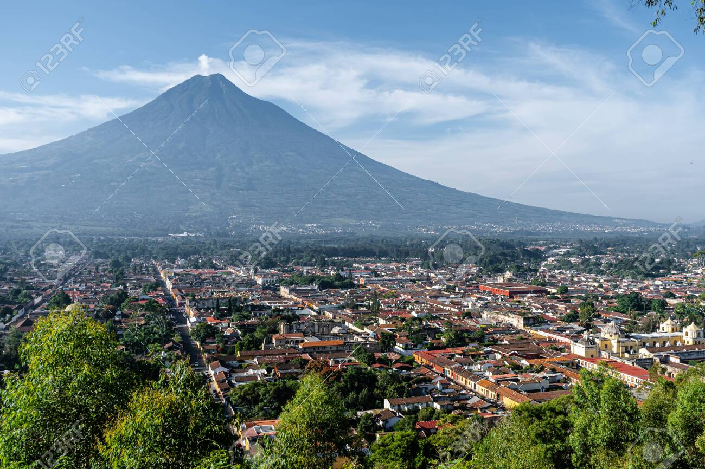

Excursión a Antigua Guatemala
Descripción del Lugar
Antigua Guatemala es una ciudad colonial ubicada en el departamento de Sacatepéquez, Guatemala. Conocida por su arquitectura barroca española y sus ruinas coloniales, fue declarada Patrimonio de la Humanidad por la UNESCO en 1979. La ciudad está rodeada por tres volcanes: Agua, Fuego y Acatenango, ofreciendo paisajes espectaculares y una experiencia cultural única.
Sus calles empedradas, iglesias históricas, conventos en ruinas y coloridas fachadas coloniales la convierten en uno de los destinos turísticos más importantes de Centroamérica.
Galería de Imágenes

Arco de Santa Catalina
Símbolo icónico de Antigua
Símbolo icónico de Antigua

Iglesia de La Merced
Arquitectura barroca colonial
Arquitectura barroca colonial

Parque Central
Corazón de la ciudad colonial
Corazón de la ciudad colonial

Volcán de Agua
Vista panorámica espectacular
Vista panorámica espectacular
Itinerario de la Excursión
| Día | Horario | Actividad | Lugar | Duración |
|---|---|---|---|---|
| Sábado Día 1 |
7:00 AM | Salida desde Ciudad de Guatemala | Terminal de Buses / Punto de encuentro | - |
| 8:30 AM | Llegada a Antigua Guatemala | Centro histórico | - | |
| 9:00 AM | Recorrido por el Parque Central | Plaza Mayor y Catedral | 45 min | |
| 10:00 AM | Visita al Arco de Santa Catalina | 5ta Avenida Norte | 30 min | |
| 11:00 AM | Tour por la Iglesia de La Merced | 1ra Calle Poniente | 40 min | |
| 12:00 PM | Almuerzo típico guatemalteco | Restaurante local recomendado | 1.5 hrs | |
| Sábado Día 1 |
2:00 PM | Exploración del Mercado de Artesanías | Mercado Central | 1 hr |
| 3:30 PM | Visita a ruinas del Convento de las Capuchinas | 2da Avenida Norte | 1 hr | |
| 5:00 PM | Caminata al Cerro de la Cruz (mirador) | Norte de la ciudad | 1.5 hrs | |
| 7:00 PM | Cena y tiempo libre | Centro histórico | 2 hrs | |
| Domingo Día 2 |
6:00 AM | Desayuno y preparación | Hotel/hospedaje | 1 hr |
| 7:00 AM | Excursión opcional al Volcán de Agua | Base del volcán - Santa María de Jesús | 6 hrs | |
| 2:00 PM | Regreso a Ciudad de Guatemala | Terminal de Buses | 1.5 hrs |
Nota: Los horarios pueden variar según las condiciones del clima y el grupo. La excursión al volcán es opcional y requiere condición física adecuada.
Lista de Actividades
- Recorrido por el Arco de Santa Catalina
- Visita a la Iglesia de La Merced
- Exploración del Mercado de Artesanías
- Tour de cafeterías locales
- Fotografía en las calles empedradas
- Visita al Museo de Jade
- Caminata por el Cerro de la Cruz
- Degustación de dulces típicos
- Compras de textiles guatemaltecos
- Visita a talleres de artesanos locales
- Observación de la arquitectura colonial
- Tour nocturno por las ruinas iluminadas